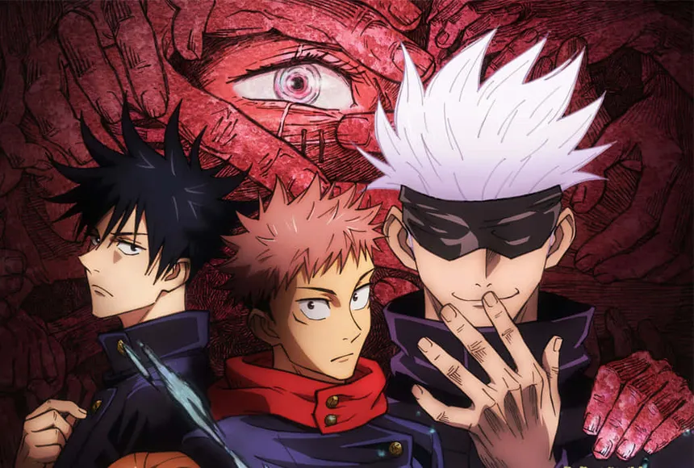
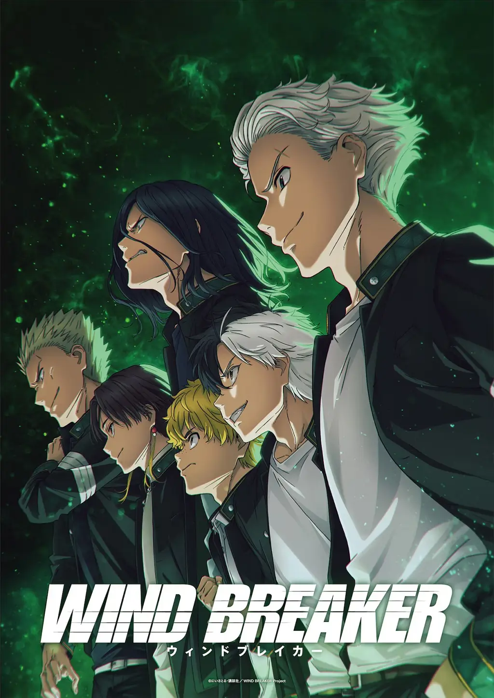

1. Demon Slayer

Positive Reactions: Many viewers praise the series for its stunning animation, dynamic fight scenes, and emotional storytelling.
This OTT platform for anime and movies
Click a poster to open the IMDb page.
Positive Reactions: Many viewers praise the series for its stunning animation, dynamic fight scenes, and emotional storytelling.

Gojo vs. Sukuna: The creator provided commentary on the legendary fight, emphasizing its narrative and emotional weight, as well as the visual and structural challenges of animating such a high-stakes confrontation.

Solo Leveling has generated strong reactions across audiences, with opinions split between high praise and critical dismissal.

Wind Breaker has generated a wide range of reactions, particularly regarding its anime adaptation and webtoon/manga source material.